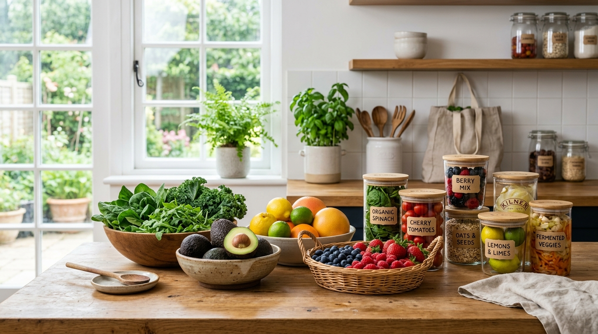

Save Food. Save Tomorrow.
A production-style system to help households, culinary creators, and community groups preserve groceries up to 3x longer, track waste patterns, and share surplus food with people in need.

Built for Sustainable Living
Everything you need to stop unnecessary grocery waste and share wholesome food.
Pantry Inventory & Expiry Monitor
Log perishables with smart expiry alerts. Receive automated visual tags for items fresh, expiring within 72 hours, or requiring immediate use.
Preservation Encyclopedia
Explore food storage science for fruits, vegetables, grains, dairy, meats, and leftovers. Learn optimal humidity, temperature, and freezing guidelines.
Waste Tracker & Root-Cause Analytics
Record discarded groceries by weight and reason (spoilage, excess cooking, forgotten dates) to uncover habits and get actionable behavioral remedies.
Community Surplus Sharing
List extra orchard fruit, bakery bread, or unopened dry goods. Coordinate pickup with local food shelters and neighborhood initiatives safely.
AskBite AI Assistant
Instant answers to tricky kitchen storage questions: "Should I refrigerate tomatoes?", "How to freeze cooked rice?", or "How to revive wilted lettuce?".
Standalone Local Extraction
SaveBite is crafted with clean vanilla HTML5, CSS3, and JavaScript. Download the complete ZIP archive and run it directly in VS Code Live Server.
How SaveBite Works
Four simple steps to transform how you handle groceries.
Log Perishables
Add fresh produce, dairy, or cooked meals to your digital inventory with purchase and expiry dates.
Apply Storage Best Practices
Consult science-backed preservation guides for moisture control, crisper drawers, and freezing techniques.
Act on Expiry Warnings
Prioritize items nearing expiration, plan meals with FIFO discipline, or share surplus with neighbors.
Track & Eliminate Waste
Log unavoidable discards to receive targeted habit recommendations that trim grocery expenditure.
Ready to save groceries and reduce food waste?
Start in 10 seconds. Use our pre-seeded demo account or register your personal local profile.